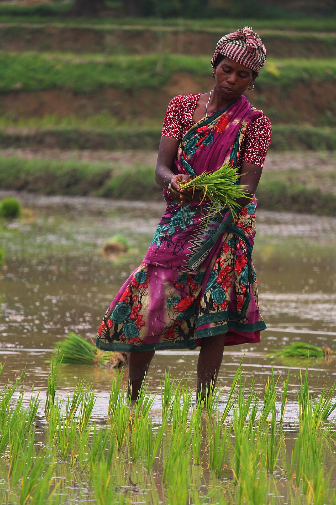
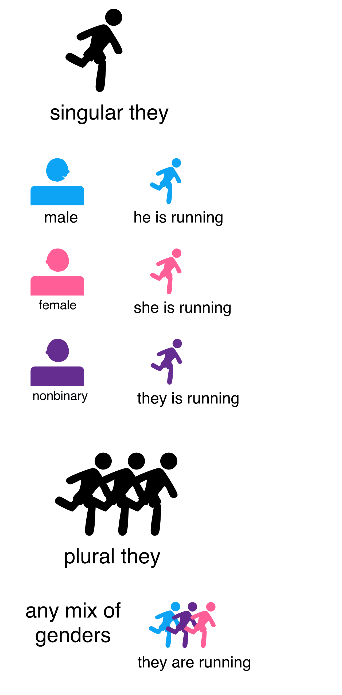
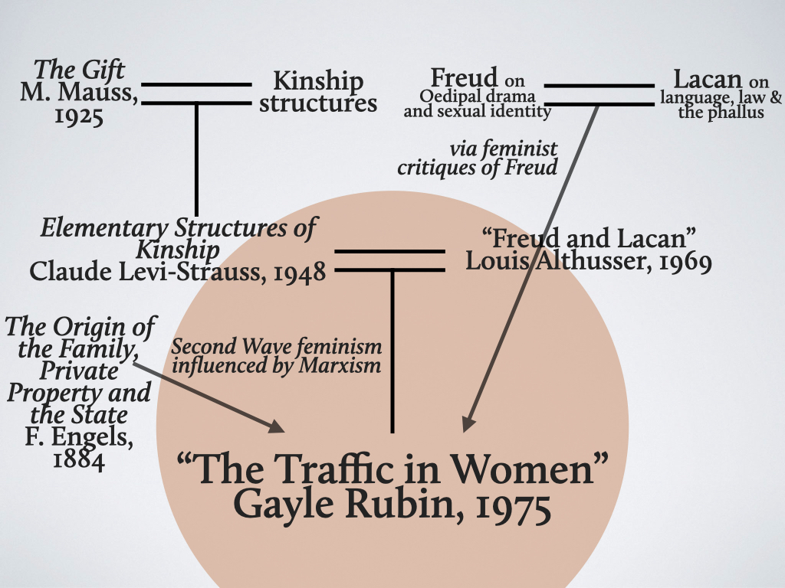

Gender & Sexuality
A newborn is announced with a single word — "girl" or "boy" — and in that instant a lifetime of expectations begins to attach. But which expectations? Anthropology's central discovery about gender is that almost nothing we assume is "natural" about women and men survives a trip across cultures: the tasks, the temperaments, the clothing, and even the number of gender categories differ dramatically from one society to the next. This chapter separates biological sex from cultural gender, follows gender into the division of labor, meets the many societies that recognize more than two genders, weighs the evidence for male dominance and for matriarchy, and shows that sexuality itself — what people desire and how they act on it — is shaped by culture as much as by biology.
By the end of this chapter you can
- Distinguish sex from gender and explain why anthropologists treat gender as culturally constructed.
- Summarize Margaret Mead's Sex and Temperament and what it demonstrated about temperament and biology.
- Describe the gendered division of labor and how its content varies while its existence is near-universal.
- Identify third and additional gender categories with real examples — hijra, two-spirit, muxe, fa'afafine, bissu.
- Contrast the emic reality of these categories with the etic umbrella label "third gender."
- Define patriarchy and gender stratification, and evaluate the evidence for and against matriarchy.
- Separate matrilineal, matrilocal, and matrifocal from matriarchal.
- Explain how sexuality is culturally variable, using the Sambia, Trobriand, and Samoan cases.
Section 1Sex and gender

Two words that are not the same word
In everyday speech "sex" and "gender" are used interchangeably, but anthropology draws a firm line between them, and the whole field of gender studies grows out of that line. Sex refers to the biological distinctions between females and males — chromosomes, gonads, hormones, and reproductive anatomy. Gender refers to the cultural meanings, expectations, and behaviors a society attaches to those bodies: what it means to act like a woman or a man, how one should dress, speak, work, and feel. Sex is roughly the same everywhere; gender is astonishingly variable. That variability is the anthropologist's evidence that gender is learned, not inborn — it is acquired through enculturation, the same process by which we absorb any part of our culture.
The line is real but not perfectly clean, and anthropologists are careful here. Biology itself resists a tidy binary: intersex people are born with combinations of chromosomes, hormones, or anatomy that do not fit neatly into "female" or "male," and every society must decide what to make of them. Even the categories we call "biological sex" are, in part, cultural interpretations of bodies. The takeaway is not that biology is irrelevant, but that culture always has the last word on what a body means.
Mead in the New Guinea highlands
The classic demonstration came from Margaret Mead, a student of Franz Boas and a champion of his principle of cultural relativism. In Sex and Temperament in Three New Guinea Societies (1935), Mead compared three nearby peoples. Among the Arapesh, both women and men were raised to be gentle, cooperative, and nurturing — by Western standards, both sexes seemed "feminine." Among the Mundugumor, both sexes were expected to be fierce, aggressive, and jealous. Among the Tchambuli (Chambri), the pattern reversed the Western script entirely: women were assertive, practical, and controlled the fishing and trade, while men were decorative, emotional, and preoccupied with art and ceremony.
Mead's argument was simple and radical: if temperament were fixed by biological sex, it could not flip from one valley to the next. Because it does, the "natural" personalities of women and men must be cultural constructions. Later scholars have criticized details of Mead's fieldwork, but her core claim — that gendered temperament is culturally patterned — has held up across a century of cross-cultural research.
| Question | Sex | Gender |
|---|---|---|
| What is it? | Biological difference (chromosomes, hormones, anatomy) | Cultural meaning attached to those bodies |
| Where does it come from? | Largely from biology and development | Learned through enculturation |
| How much does it vary? | Roughly similar across societies | Varies dramatically across societies |
| How many categories? | Usually two, but intersex bodies exist | Two, three, or more, depending on the culture |
| Can it change in a lifetime? | Mostly stable | Can shift with age, ritual, or status |
- Sex is biological; gender is the cultural meaning a society attaches to sexed bodies.
- Gender is learned through enculturation, which is why it varies so much across cultures.
- Intersex bodies show that even biological sex is not a perfect binary.
- Mead's Sex and Temperament showed gendered temperament is culturally patterned, not biologically fixed.
Section 2Gender roles and the division of labor

Universal division, arbitrary content
A gender role is the set of activities, rights, and duties a society assigns to a gender. Nearly every known society divides labor by gender in some way — the division of labor by gender is one of the closest things anthropology has to a human universal. What is not universal is which jobs belong to whom. Hunting large game and warfare are usually (not always) male; child care, cooking, and gathering are often (not always) associated with women. But cross-cultural surveys, such as those compiled by George Murdock and Caterina Provost, show that many tasks — farming, weaving, pottery, trade, building — are assigned to men in some societies and women in others with no biological rhyme or reason.
The exceptions matter as much as the patterns. Among the Agta of the Philippines, women hunt with bows and dogs and are respected hunters. In many foraging (hunter-gatherer) societies, women's gathering supplies the majority of the calories, making the "man the hunter" image both inaccurate and androcentric. The lesson is Boasian: describe the specific arrangement of a specific people before generalizing about "men's work" and "women's work."
Whose work counts
Assigning tasks is only half the story; societies also assign value, and here anthropology has repeatedly caught its own blind spots. When Bronisław Malinowski studied the Trobriand Islanders in the 1910s, he described a world of male yam gardens and male kula exchange. Decades later Annette Weiner returned to the same islands and found an entire economy Malinowski had walked past: women produce and exchange enormous quantities of banana-leaf bundles and skirts, wealth that is essential to mortuary ceremonies and that gives Trobriand women real, autonomous power. The work had been there all along; a male ethnographer simply had not seen it.
Patterns of subsistence also shape gender roles. The economist Ester Boserup argued that intensive plow agriculture, which demands upper-body strength and keeps fields far from the home, tends to concentrate farm labor in men and push women toward domestic work — and is statistically associated with steeper gender inequality than the hoe horticulture it often replaces. Technology and economy, in other words, are woven into the gender system.
| Task | Common tendency | Real exceptions |
|---|---|---|
| Hunting large game | Usually men | Agta women (Philippines) are active hunters |
| Gathering plant foods | Often women | Supplies most calories in many foraging bands |
| Warfare | Usually men | The agojie, the women's regiments of Dahomey (West Africa) |
| Weaving & cloth wealth | Varies widely | Women's banana-leaf wealth among the Trobrianders |
| Farming | Men under plow agriculture; women under hoe horticulture | Reverses between societies (Boserup) |
| Child care | Usually women | Aka "fathers" (Central Africa) among the most involved on record |
- A gendered division of labor is nearly universal; its content is culturally arbitrary.
- "Man the hunter" is androcentric — women's gathering often provides most of the food.
- Societies assign not just tasks but value; ethnographers can overlook women's contributions (Malinowski vs. Weiner).
- Subsistence technology, such as plow vs. hoe agriculture (Boserup), shapes gender roles and inequality.
Section 3More than two

Societies that count past two
Many cultures have long recognized gender categories that are neither "man" nor "woman," and treating gender as a strict binary is itself a cultural assumption — a Western one. In South Asia, the hijra form a recognized category studied classically by Serena Nanda in Neither Man Nor Woman; assigned male at birth, hijras live as a distinct gender, are devotees of the goddess Bahuchara Mata, and are called on to bless newborns and weddings. Across many Native North American nations, people who blended or crossed gendered roles held distinct social and often ceremonial statuses, though the particulars — the name, the duties, the degree of prestige — differed from nation to nation. The colonial-era term berdache has been replaced by two-spirit, an intertribal English term adopted at a 1990 gathering in Winnipeg; it is an umbrella for contemporary use, not a substitute for each nation's own word. Among the Zuni, the celebrated lhamana We'wha was a respected weaver, potter, and cultural ambassador who travelled to Washington in 1886, documented by Will Roscoe.
The list keeps going. The muxe of the Zapotec city of Juchitán, in Oaxaca, Mexico, are assigned male at birth and occupy a valued third role in family and festival life. Samoan fa'afafine ("in the manner of a woman") are an accepted part of village society. Among the Bugis of Sulawesi, the anthropologist Sharyn Graham Davies documented a system of five genders, including the ritually powerful bissu. In the highlands of Albania and Montenegro, "sworn virgins" (burrnesha) take a vow of celibacy and thereafter live socially as men, inheriting property and heading households.
Whose category is it?
Here the distinction between emic and etic becomes essential. "Third gender" is an etic label — an outsider's analytic umbrella, useful for comparison but coarse. From the emic point of view, a hijra, a two-spirit person, a muxe, and a bissu do not experience themselves as members of one shared "third" category; each is a specific status embedded in its own religion, kinship system, and history. Gilbert Herdt's collection Third Sex, Third Gender made exactly this point: the phrase is a scholarly convenience, and we should never flatten distinct, meaningful lives into a single exotic box. Nor should we assume these roles map onto modern Western identities such as "transgender" — sometimes they overlap, often they do not.
| Category | Society / region | In brief |
|---|---|---|
| Hijra | South Asia | Distinct gender; ritual role blessing births and weddings (Nanda) |
| Two-spirit | Many Native North American nations | Umbrella replacing berdache; often honored roles (e.g., Zuni lhamana) |
| Muxe | Zapotec, Oaxaca, Mexico | Assigned male at birth; valued role in family and festival |
| Fa'afafine | Samoa | "In the manner of a woman"; accepted village status |
| Bissu | Bugis, Sulawesi | One of five recognized genders; ritual specialists |
| Sworn virgin (burrnesha) | Balkans | Assigned female; vow to live socially as a man |
- Many societies recognize more than two genders; the binary is a cultural assumption, not a universal fact.
- Real examples include the hijra, two-spirit people, muxe, fa'afafine, and bissu.
- Berdache is an outdated term now replaced by two-spirit.
- "Third gender" is an etic umbrella; the emic reality is many distinct, non-interchangeable statuses.
Section 4Gender and power

Patriarchy and gender stratification
Gender stratification is the unequal distribution of power, prestige, and resources between genders. Where men hold systematically more of these, we speak of patriarchy. Male dominance is common across the ethnographic record, but it is neither total nor uniform: societies range from steeply male-dominated to broadly egalitarian, and men's control in one domain (say, politics) may coexist with women's control in another (say, the household economy). Sherry Ortner's famous 1974 essay "Is Female to Male as Nature Is to Culture?" asked whether women are universally symbolically linked to nature, and therefore devalued, because of their role in reproduction. The essay launched decades of debate; most anthropologists now reject it as too sweeping, precisely because the ethnographic variation is so wide.
Was male dominance always this way? Eleanor Leacock, drawing on Engels's The Origin of the Family, Private Property and the State, argued that many foraging societies were fundamentally egalitarian, with gender complementarity rather than hierarchy, and that much of the male dominance ethnographers observed had been intensified by colonialism, missionization, and the spread of private property. Gender stratification, on this view, has a history — it is not a fixed fact of human nature.
Is there such a thing as matriarchy?
If patriarchy means rule by men, matriarchy would be its mirror image: rule by women. On that strict definition, anthropologists have never documented a matriarchy — no known society is governed by women in the way many are governed by men. But this is often misunderstood, because several distinct arrangements are well documented and are easily confused with matriarchy. A society can be matrilineal (descent and inheritance traced through the mother's line), matrilocal (a married couple lives with or near the wife's kin), or matrifocal (households centered on mothers), all without women "ruling."
Several such societies grant women striking power. Among the Haudenosaunee (Iroquois), the clan mothers controlled the longhouses and the stored food and nominated — and could remove — the male sachems who sat in council. The Minangkabau of Sumatra — the world's largest matrilineal society — pass land through women; Peggy Reeves Sanday argues they are best understood on their own emic terms as a "matriarchate" built on balance rather than female domination. Among the Mosuo (Na) of southwest China, described by Cai Hua, households are organized around women and property passes through the female line, with "walking marriages" that keep partners in separate homes. Marriage systems can also prise a social role loose from the sexed body altogether: among the Nuer of South Sudan, Evans-Pritchard described woman-marriage, in which a woman with no children of her own may marry another woman, pay the bridewealth, and stand as the legal father — the pater — of the children a male genitor fathers for the household. "Husband" and "father," it turns out, are social offices that a woman can hold. Finally, Gayle Rubin's "The Traffic in Women" (1975) reframed the whole question: building on Lévi-Strauss, she argued that marriage systems which exchange women between groups of men are a foundational mechanism of the "sex/gender system" that produces male power in the first place.
| Term | What it refers to | Example |
|---|---|---|
| Patriarchy | Systematic male dominance in power and prestige | Common but variable across societies |
| Gender stratification | Unequal access to power, prestige, resources by gender | Ranges from steep to near-absent |
| Matrilineal | Descent/inheritance through the mother's line | Minangkabau, Mosuo, many others |
| Matrilocal | Couple resides with the wife's kin | Common alongside matriliny |
| Matrifocal | Households centered on mothers | Documented widely; not "rule by women" |
| Matriarchy | Rule by women (mirror of patriarchy) | Not documented on the strict definition |
- Gender stratification is unequal access to power and resources; patriarchy is systematic male dominance.
- Male dominance is common but variable and, per Leacock, partly a product of history and colonialism.
- No matriarchy (rule by women) is documented, but many matrilineal/matrilocal/matrifocal societies empower women.
- Rubin's "Traffic in Women" locates male power in the marriage exchange of women itself.
Section 5Sexuality
Sexuality is cultural, not just natural
It is tempting to think of sexuality as pure biological drive, the same everywhere. Anthropology says otherwise: while the capacity for sexual feeling is human, what is desired, who is a permissible partner, when sex is allowed or forbidden, and what it all means are shaped by culture. Early fieldwork made this vivid. Malinowski's 1929 Trobriand monograph — published under a title whose language is a relic of its era — described relatively open premarital relationships among Trobriand adolescents; Mead's Coming of Age in Samoa (1928) argued that Samoan youth passed through adolescence with far less sexual anxiety than American teenagers — a claim later contested by Derek Freeman, in a debate that itself became a landmark in anthropology.
The most powerful lesson is that behavior is not identity. Among the Sambia of Papua New Guinea — "Sambia" is a pseudonym Gilbert Herdt used to protect the people he studied — boys undergo years of staged male initiation that includes ingesting semen, which the Sambia understand emically as necessary for a boy to grow into a strong man and warrior. This is a rite of passage in van Gennep's sense: the initiates are separated from the world of women, held for years in a liminal state, and finally reincorporated as adult men. These same men then marry women and father children. To label this "homosexuality" in the Western sense — a fixed identity and orientation — badly misreads what is, emically, an age-structured ritual practice. The neighboring Etoro, by contrast, place long taboos on heterosexual intercourse for much of the year. And Evans-Pritchard documented age-structured relationships between warriors and boys among the Azande of Central Africa.
Where our categories came from
If behavior and identity can come apart, then our familiar categories — "heterosexual," "homosexual" — are themselves cultural products with a history. The philosopher Michel Foucault, whose work reshaped this corner of anthropology, argued in The History of Sexuality that "the homosexual" as a kind of person was a 19th-century Western invention: before that, there were forbidden acts, not sexual identities. Anthropologists therefore distinguish sexual behavior, sexual desire, and sexual identity, and warn against the ethnocentric error of assuming another society sorts these the way ours does. Understanding a people's sexuality means learning their categories — an emic project — not sorting them into ours.
| Society | Practice or belief | Anthropological point |
|---|---|---|
| Trobriand (Malinowski) | Open adolescent premarital relationships | Sexual norms vary; Western prohibition is not universal |
| Samoa (Mead) | Relatively low-anxiety adolescence | Adolescent stress is culturally shaped (Mead–Freeman debate) |
| Sambia (Herdt) | Ritual semen ingestion in male initiation | Behavior is not identity; the practice is age-structured |
| Etoro (PNG) | Seasonal taboos on heterosexual sex | Even reproduction can be culturally restricted |
| Azande (Evans-Pritchard) | Age-structured relations among warriors | Same-sex practice need not imply a Western "orientation" |
- Sexuality is culturally constructed: what, who, when, and what it means all vary.
- Classic cases — Trobriand, Samoa, Sambia, Etoro, Azande — show norms and practices far from the Western default.
- Sexual behavior, desire, and identity are distinct and should not be conflated.
- Foucault argued the modern "homosexual" identity is a recent Western category, not a human universal.
The chapter in one breath
- Sex is biological; gender is the cultural meaning attached to bodies and is learned through enculturation.
- Mead's Sex and Temperament showed gendered temperament flips between neighboring societies, so it cannot be biologically fixed.
- A gendered division of labor is near-universal, but which tasks belong to whom — and which are valued — is culturally arbitrary.
- Many societies recognize more than two genders (hijra, two-spirit, muxe, fa'afafine, bissu); "third gender" is an etic umbrella over distinct emic realities.
- Gender stratification and patriarchy are common but variable; no matriarchy is documented, though many matrilineal societies empower women.
- Keep matrilineal, matrilocal, and matrifocal distinct from matriarchal — they describe descent, residence, and household focus, not rule.
- Sexuality is cultural, not just natural; behavior is not identity, and even the hetero/homo categories have a history.
ReferenceWords worth knowing
A quick reference for the terms in this chapter — skim it now, or circle back whenever a word trips you up.
- Androcentrism
- Seeing or describing a culture from a male point of view, treating men's activities as central and women's as marginal.
- Berdache
- An outdated colonial term for gender-variant people in Native North America, now replaced by two-spirit.
- Bissu
- Among the Bugis of Sulawesi, a ritually powerful gender category within a system that recognizes five genders.
- Division of labor (gendered)
- The assignment of tasks by gender; near-universal in existence but culturally variable in content.
- Emic
- An account of a culture in terms of the insiders' own concepts and categories.
- Etic
- An account of a culture in terms of an outside analyst's comparative categories, such as "third gender."
- Fa'afafine
- A recognized Samoan gender, "in the manner of a woman," accepted within village society.
- Gender
- The cultural meanings, roles, and expectations a society attaches to sexed bodies; learned, not inborn.
- Gender role
- The activities, rights, and duties a society assigns to a particular gender.
- Gender stratification
- The unequal distribution of power, prestige, and resources between genders.
- Hijra
- A recognized gender category in South Asia, neither man nor woman, with ritual roles blessing births and weddings.
- Intersex
- Being born with chromosomes, hormones, or anatomy that do not fit typical definitions of female or male.
- Matriarchy
- Rule by women, the mirror image of patriarchy; not documented in any known society on the strict definition.
- Matrifocal
- Describing households or families centered on mothers; not the same as rule by women.
- Matrilineal
- Tracing descent and inheritance through the mother's line.
- Matrilocal
- A residence pattern in which a married couple lives with or near the wife's kin; distinct from matrilineal descent and from matriarchy.
- Muxe
- Among the Zapotec of Oaxaca, Mexico, people assigned male at birth who occupy a valued third gender role.
- Patriarchy
- A social system of systematic male dominance in power and prestige.
- Sex
- The biological distinctions between females and males — chromosomes, hormones, gonads, and anatomy.
- Sexuality
- Culturally shaped patterns of sexual desire, behavior, and identity.
- Third gender
- An etic umbrella term for recognized gender categories beyond man and woman; covers many distinct emic statuses.
- Two-spirit
- A modern pan-tribal term for Native North American people who blend or cross gendered roles, often in honored positions.
- Woman-marriage
- A socially recognized marriage between two women, as among the Nuer, where one takes a socially male role as "husband" and pater.